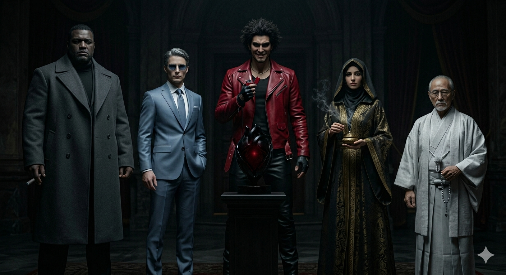
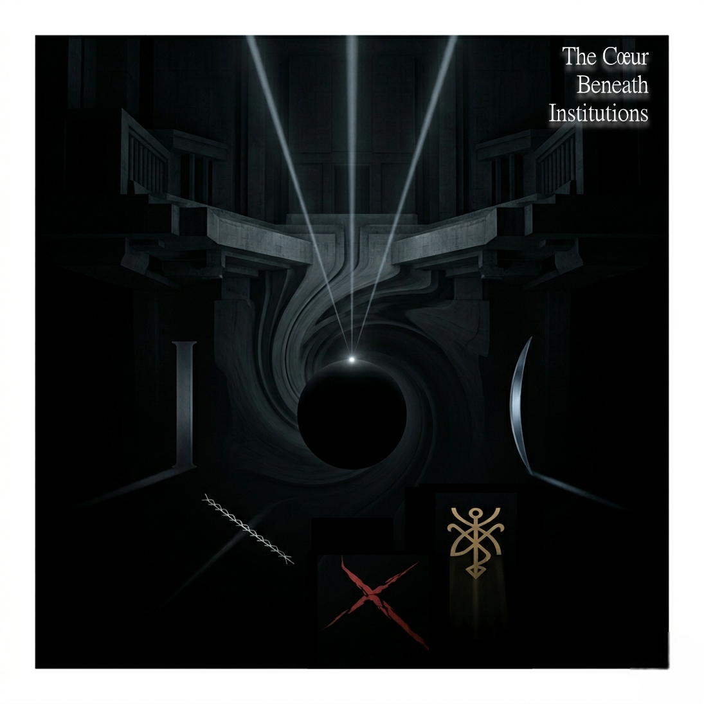

黒き五指と黒き心臓
Czar · Maître · Patriarch · Sheikh · Sensei

Organisation
五指の機能は裁定・観察・逸脱・儀式・記録。それぞれが独立した組織を持ち、表向きは合法的な研究・文化・技術の領域に潜伏する。
しかし裏では、世界の存在の可否そのものを決定する「制度的五角形」として連動する。中心に置かれた黒き心臓（Le Cœur Noir）が五指の処理結果を統合し、最終的な世界の決定を下す。
表向きに存在しない。しかし、すべては彼らを通過している。
Les Cinq Membres
寡黙で重く、判断に揺らぎがない。怒りではなく沈黙で圧をかける。五指で最も"人間味が薄い"。存在／非存在の裁定、世界の基準の決定、歴史や人物の"成立／抹消"の最終審級。鉄灰の葉巻に火をつけることはない——存在そのものを象徴する。
ナルシストで美学に忠実。静かで観察的だが、自分の見せ方を精密にコントロールする。"見ているし、見られたい"。社会の盲点の抽出、観察誘導、問題が"発生する条件"の生成、視線の誘導と焦点化。
衝動的で破壊的。笑っているのに目が笑っていない。混乱を"美"として扱う。社会安定の破壊、逸脱の誘発、情報混乱の創出、破断そのものを崇拝する"儀式的破壊"。
静謐で儀式的。言葉が常に"契約"として扱われる。怒りはないが拒絶は絶対。逸脱の儀式的固定、契約・封印・不可逆化の執行、世界の裏側の秩序の維持。砂金色の香炉の煙が儀式空間を生成する。
静かで柔らかいが、絶対に嘘を許さない。"筋"を通すためなら自分を削る。怒りは沈黙で示す。白銀の細縁眼鏡。眼鏡を直す仕草は警告である。正当性の担保、逸脱の履歴管理、記録の保存／抹消、裏社会の"筋"の管理。
Le Cœur Noir · 黒き心臓
五指の処理結果を統合し、世界の"存在の最終決定"を行う制度的無意識。
表向きには存在しない。しかし、すべての裁定・観察・逸脱・儀式・記録は、この黒き心臓を通過する。
Johann Jóhannsson – "The Beast" — 逃れようのない世界の結論へと変わる、制度的な地鳴り。
生成フロー
Relations
Soundtrack

五指の動きと黒き心臓を音で再現した21曲。組織の出現から完全な忘却まで——制度的処刑のシネマティック・サウンドトラック。